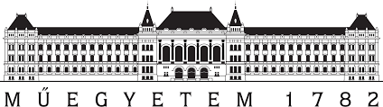
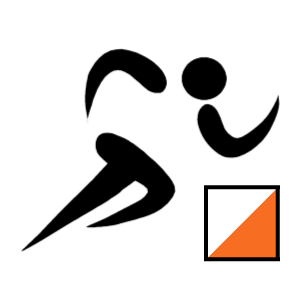
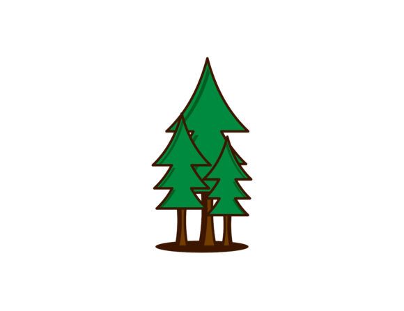
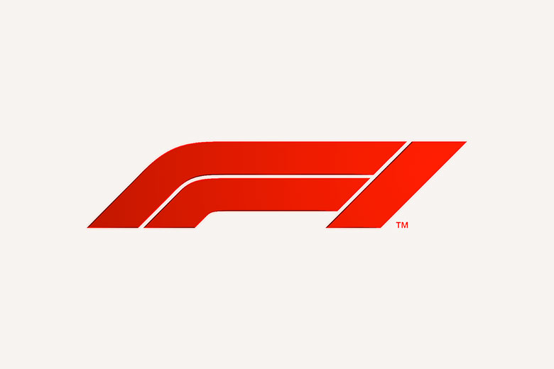
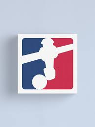
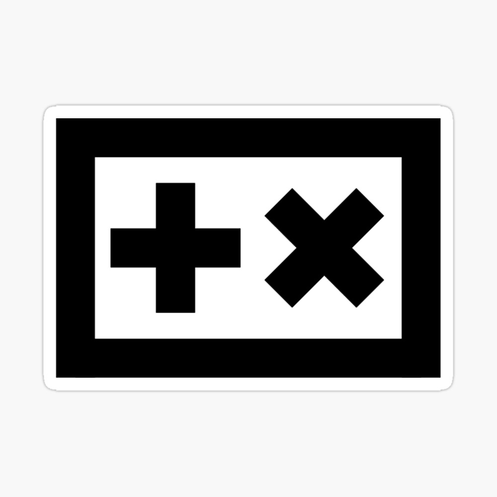

Kezdőlap
Projektek
Rólam
Végszó
SZABÓ MARCELL
Nagyon szeretek a hegyekben kirándulni.

Egy másik "guilty pleasure" számomra a BME.

Ezek mellett tájékozódási futó vagyok.

Az erdők is nagyon megfognak, amikor tehetem akkor itt töltöm az időmet.
Több-kevesebb sikerrel atlétikai karriert is építek.
Imádom a csillagászatot, ezen belül a legjobban a fekete lyukak vonzanak ;)

A Forma-1-et is aktávan követem, Vettel-rajongóként természetesen!

Bevallottan csocsófüggő vagyok.

A koliban van egy DJ-pultunk, amit a bulikban aktivizálunk.